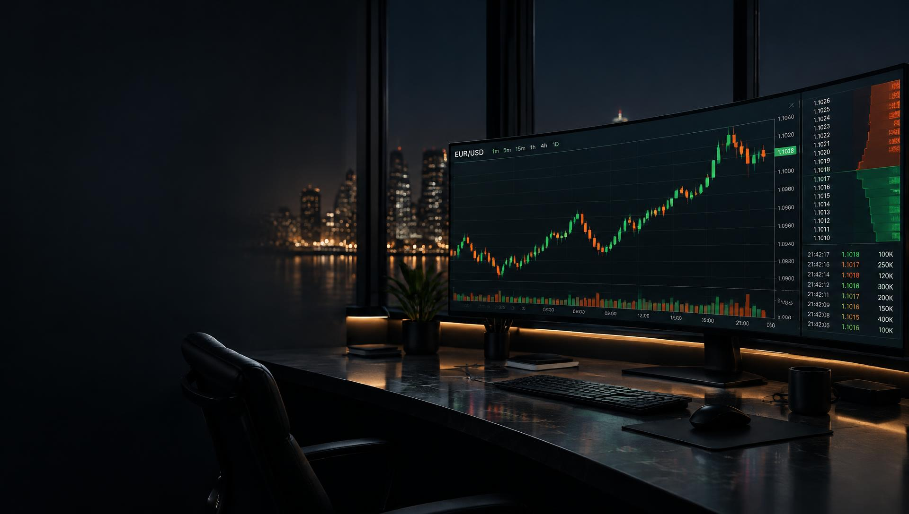
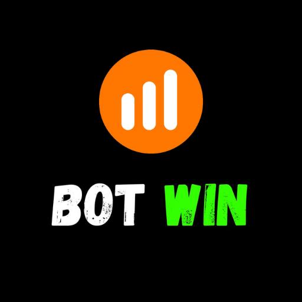

01
Leitura antes da entrada
Entenda o cenário do EUR/USD antes de decidir se vale a pena operar.


Você operou sem conseguir ler o que o mercado estava dizendo.
Chega de entrar por impulso, correr atrás do prejuízo e torcer pela próxima vela. No grupo gratuito Bot Win, você acompanha o EUR/USD com mais contexto, clareza e disciplina.
ENTRAR NO GRUPO GRÁTISAcesso gratuito pelo Telegram. Você pode sair quando quiser.
Entrou atrasado porque a vela parecia ‘óbvia’
Aumentou a mão para tentar recuperar uma perda
Operou sem saber onde o preço podia reagir
Viu a banca sumir e achou que o mercado era o problema
Se você se identificou, o problema não é falta de coragem. É falta de um processo para ler antes de agir.
O Bot Win organiza a leitura do EUR/USD para você acompanhar o cenário com objetividade — sem adivinhação e sem promessa de dinheiro fácil.
Entenda o cenário do EUR/USD antes de decidir se vale a pena operar.
Nada de clicar por impulso: direção, momento e motivo apresentados de forma clara.
Proteja sua banca com disciplina e uma rotina que reduz decisões precipitadas.
Precisa saber quando observar, quando agir e quando ficar de fora. O grupo foi criado para ajudar você a trocar o improviso por uma rotina mais consciente.
Acesse gratuitamente pelo Telegram.
Observe o contexto do EUR/USD antes da operação.
Respeite sua gestão e tome decisões conscientes.
Entre agora no grupo gratuito Bot Win e acompanhe nossas análises de EUR/USD.
ACESSAR O GRUPO GRATUITO